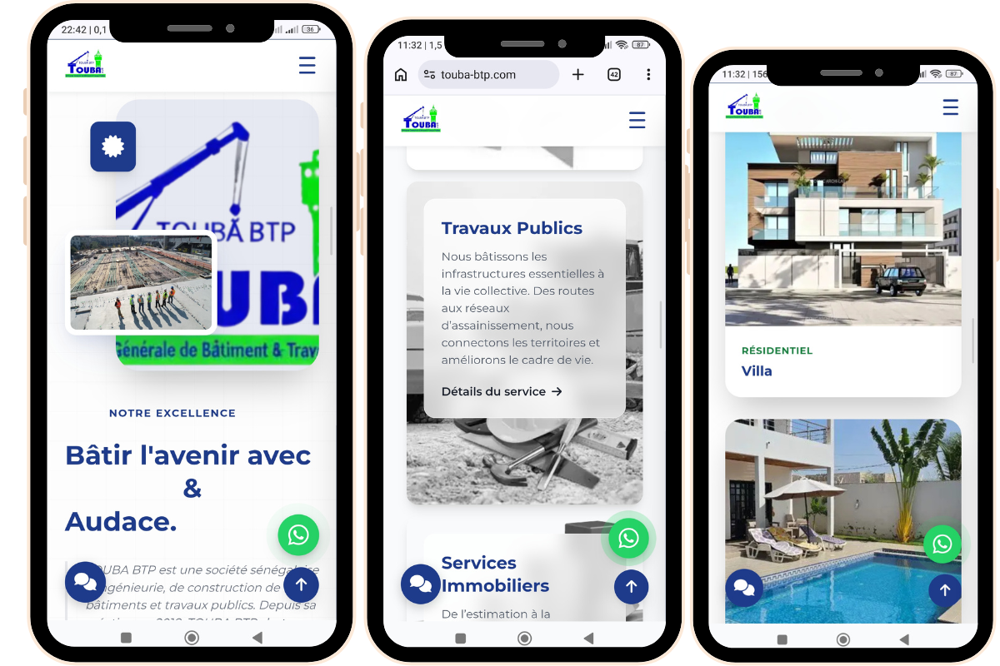
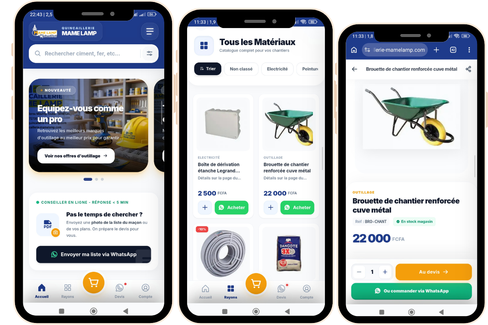
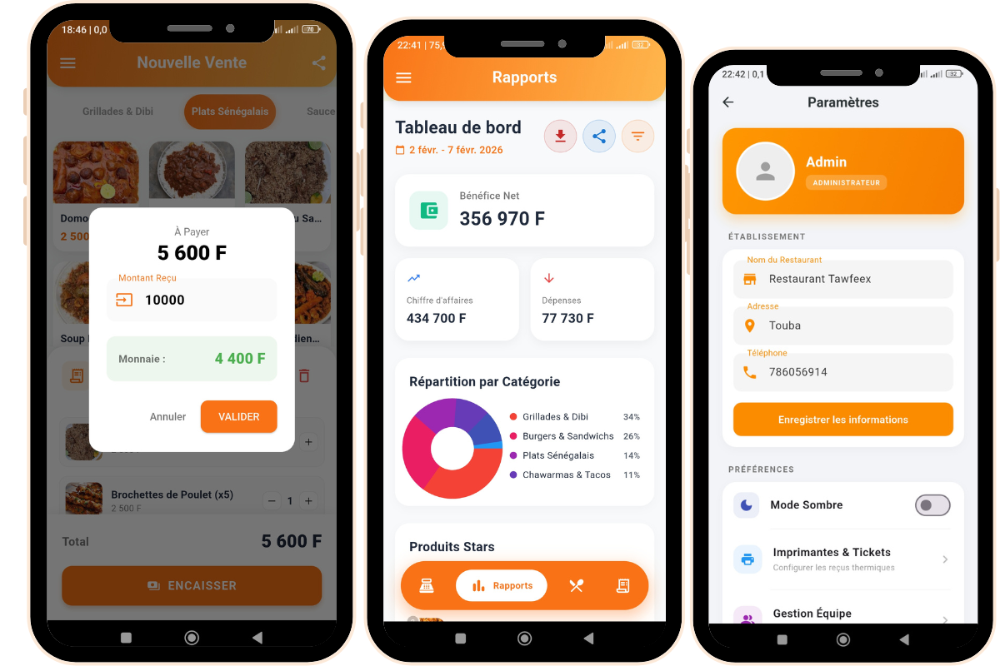
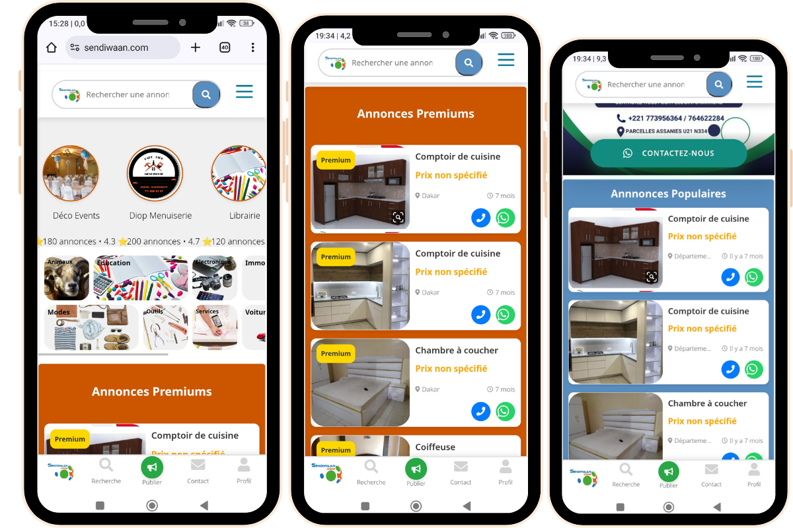
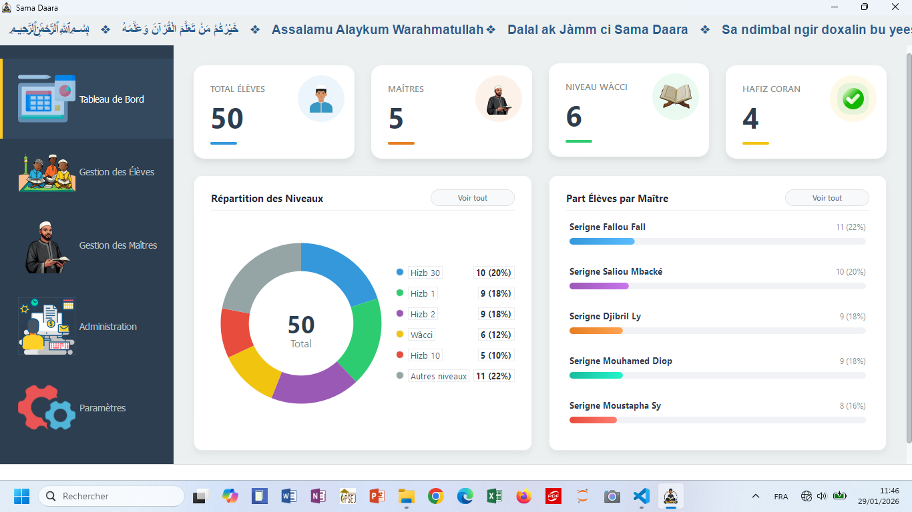
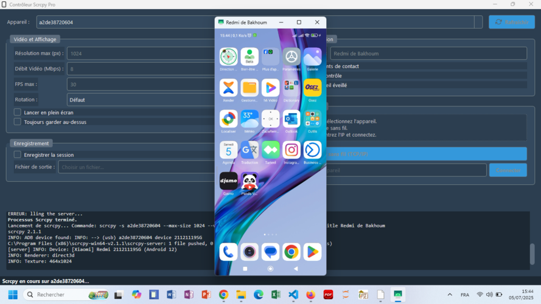

Architecte d'expériences
Socio-Techniques.
Double compétence : Développeur Full-Stack & Sociologue.
Je construis des outils puissants (Sites Vitrine Premium, Apps Flutter, PWA, Logiciels Bureau) fondés sur l'écoute active et la compréhension réelle des utilisateurs locaux au Sénégal et à l'international.
Sélection de Projets
Des applications BTP, des PWA E-commerce et des plateformes locales au design soigné.
Touba BTP - Site Sur-Mesure
Refonte complète avec un Thème WordPress conçu à partir de zéro (From Scratch) pour mettre en valeur le savoir-faire de l'entreprise.

Quincaillerie Mame Lamp
Solution e-commerce Mobile-First développée en Progressive Web App (PWA). Rapidité et fluidité extrêmes adaptées à la connexion locale.

Resto Bi (Fast Food POS)
Caisse Enregistreuse Mobile innovante (Point Of Sale). Fluidifie la prise de commande entre le serveur, la caisse et la cuisine en temps réel.

Sendiwaan Annonces
Plateforme facilitant l'économie circulaire locale à travers la diffusion gratuite et simplifiée de petites annonces avec moteur de recherche interne.

Sama Daara Gestion
Développé en Python avec une UX centrée sur les codes culturels de l'éducation religieuse. Stockage local des données pour l'autonomie et la sécurité.

Scrcpy UI - Android Cast
Interface graphique épurée rendant la puissante librairie ligne de commande 'Scrcpy' accessible facilement pour des tests QA Mobile.
Quand la Sociologie Rencontre le Code
Ma démarche et ma méthode de création de valeur logicielle."Le code construit l'outil, l'enquête sociologique assure son adoption réelle."
Mon parcours atypique a forgé mon expertise. Mon mémoire sur la gestion socio-environnementale du lac Warouwaye m'a appris à écouter les vrais besoins d'une communauté. Aujourd'hui, avant de concevoir la maquette d'un logiciel métier comme Sama Daara ou l'architecture serveur d'une App PWA pour un commerce comme Mame Lamp, j'analyse minutieusement les usages, le contexte technologique (réseau lent, terminaux variés) et l'expérience recherchée par l'utilisateur final sénégalais et global.
L'Ingénierie Agile
Ce que je livre concrètement à mes clients
- Sur-Mesure: Fini les templates rigides (Themes WordPress de zéro).
- PWA Focus: Sites convertibles en applications en 1 clic.
- UX Authentique: Des interfaces respectant vos équipes.
- Stabilité Offline: Pensé pour palier aux baisses réseau.
Écosystème Technologique
Maîtrise d'une stack complète, couplée à une analyse pointue.Engineering Full-Stack
 Mobile: Flutter (Dart), Intégrations API
Mobile: Flutter (Dart), Intégrations API
Recherche & UX/Socio
Un besoin logiciel ?
Une idée de refonte ?
Démarrons l'étude.
Je privilégie les projets stimulants. Si vous souhaitez qu'une équipe compétente ou un Freelance Senior étudie l'architecture de votre prochain App/Site avec l'oeil du sociologue et la main du dev technique, discutons-en en direct.
Écrivez-moi un courriel
yankhoba30@gmail.comAppelez-moi directement
+221 78 605 69 14